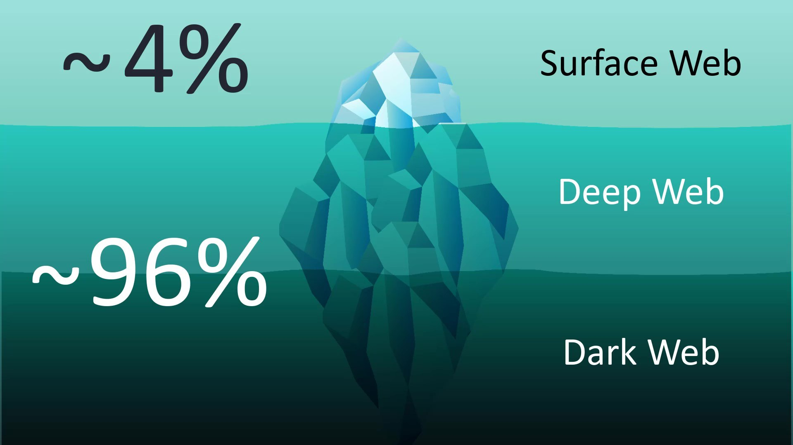
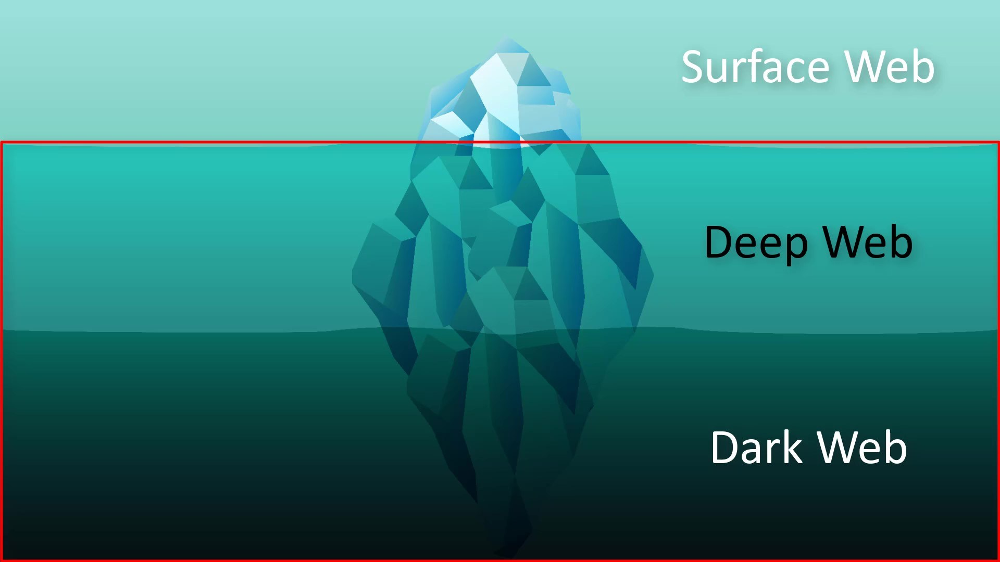
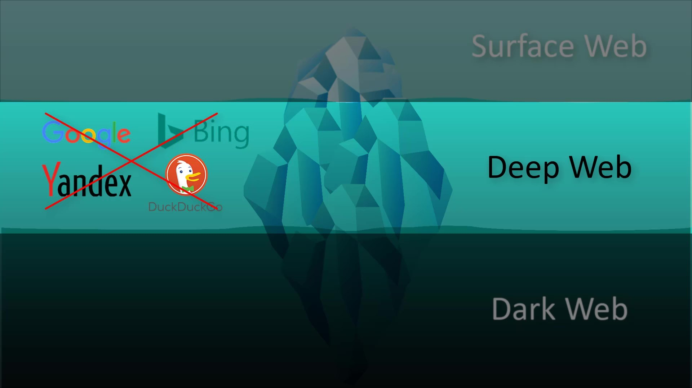
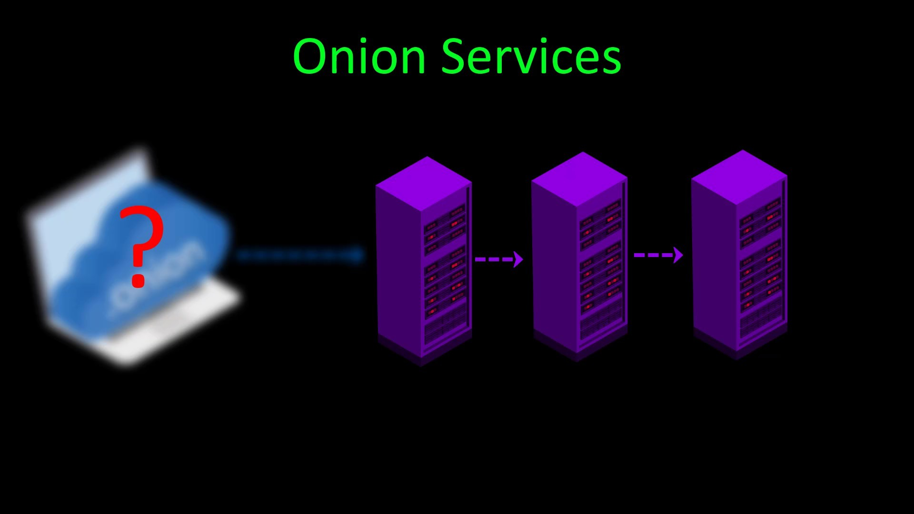

Tor Hidden Services
Let's start by explaining a few concepts. You've probably heard of the concepts of "deep web", "dark web" and "surface web" before. The iceberg example is often used because it represents concepts well.
Surface Web

As in the iceberg analogy, it represents the surface of the web network, that is, a very small fraction of the overall web network indexed by search engines. For example, when you search using a search engine such as Google, all the web content you encounter only represents those in the surface web area. Websites classified in the surface web area are websites that have accepted to be able to be indexing by standard search engines such as Google. And they represent a very small fraction of the network when considering the entire web.
Deep Web
Unlike the Surface web, it represents all kinds of web content that search engines do not index.

It usually represents the overall web area where search engines find it not worth indexing, or where websites directly block indexing to escape search engines.
To access websites in this area, the web address must be entered directly. And the conditions required for the connection must be met.For example, the admin panels of the sites are generally excluded from the indexing of search engines for security reasons. Thus, while the admin panel of the site cannot be found through the search engine, if we know its exact address, we can access this admin panel. In other words, the deep web area, which is excluded from the scope of standard search engines for this and many other reasons, is called "deep web".
Dark Web
Similar to the deep web, the dark web, on the other hand, is outside the scope of search engines on the surface web, and since it is located on the Tor network, it is only accessible over Tor.


Dark web is the general name of web addresses with onion domains kept on the Tor network and where privacy is at the forefront.

If we need to talk briefly about onion services;
With the Onion service, you can publish a website over the Tor network without any third-party service provider for "hosting" or "domain" service. Moreover, because the entire connection is routed through the Tor network and encrypted, you can remain anonymous while publishing over the onion service.

In short, this is the working structure of onion services. We will be talking about these services again in a part of the course.With the explanations we have made so far, we have briefly mentioned many concepts that you need to know in general. In addition, we will be talking about these issues in more detail in the course, as the time comes.
Now let's continue with the explanations by considering the various tools and methods by which you can access the Tor network.